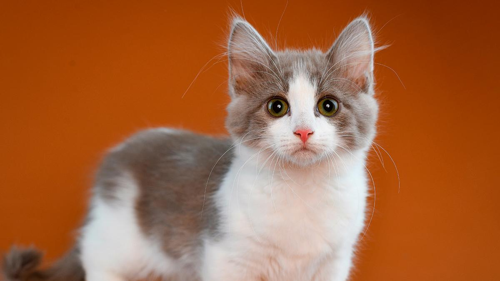

Alfa y Omega
Imagenes de michis



Si quieres ver más imagenes de michis, da clic en este enlace.
Listas de michis
Tres cosas que los michis aman:
- Romper vasos de vidrio
- Amasar
- Dormir
Tres cosas que los michis odian.
- Bañarse
- Tocar cinta adesiva
- Las puertas cerradas